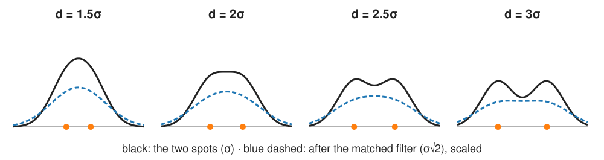
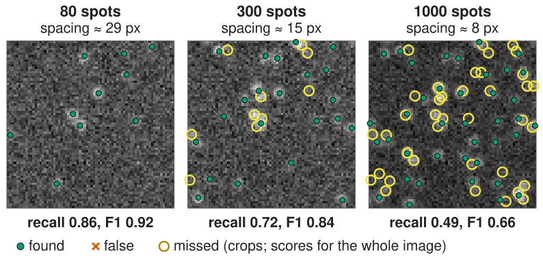
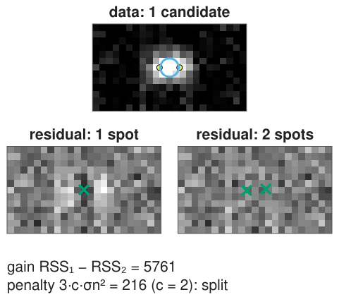
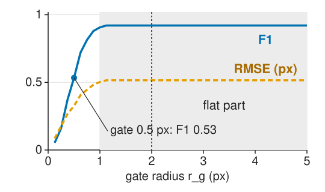

Two hard cases, and how to know whether a detector works.
When do two spots become one? The 2\sigma rule, and why the detection filter makes it worse.
Splitting a merged spot by fitting two, and why an extra spot must pay a penalty.
Evaluating a detector: one-to-one matching within a gate radius, TP/FP/FN, precision, recall, F1.
Greedy vs optimal matching.
Two kinds of error, reported separately: detection and localisation.
The threshold sweep: the precision–recall curve.
Slides titled The math give the formulas and proofs; the ideas are complete without them.
When do two spots become one?
The sum of two equal Gaussian spots of width σ has two maxima only if their distance d > 2\sigma (recall the Sparrow criterion of the resolution unit).

The detection filter widens the spots: after a Gaussian of width \sigma_f they have width \sqrt{\sigma^2 + \sigma_f^2}. The matched filter (\sigma_f = \sigma) merges pairs closer than 2\sqrt2\,\sigma: 4.2 px for σ = 1.5.
The central trade-off of the day: more smoothing → fewer false spots (unit 2) but more merged neighbours.
The math: merging
f(x) = g(x - d/2) + g(x + d/2) with g(x) = e^{-x^2/2\sigma^2}. By symmetry f'(0) = 0; the centre is a maximum (one spot) or a minimum (a dip between two) depending on the sign of
f''(0) < 0 \iff d < 2\sigma: one maximum. At d > 2\sigma the centre is a dip and there are two maxima.
Filtering with a Gaussian of width \sigma_f: Gaussians convolve with variances adding, \sigma_\text{eff}^2 = \sigma^2 + \sigma_f^2; the rule becomes d > 2\sigma_\text{eff}.
In 2D the same holds along the line through both spots.
Density
As spots get denser, problems start long before the image “looks crowded”:
Recall drops: pairs closer than ~4 px (after the filter) give one candidate.
Localisation error rises: a neighbour’s tail adds light on one side of a spot and biases its fit.
False merges: one candidate halfway between two spots, matching neither.
Rule of thumb, to check with the demo: when the typical spacing falls below about 4\sigma, accuracy suffers. With σ = 1.5 px in a 256 × 256 image, 1 000 spots (mean spacing about 8 px) already lose half of them.

Splitting by fitting
Fit one spot. If the residual is much larger than the noise (an elongated ring of leftover light), fit two:
Put the second spot where the residual is largest, the first one mirrored about the one-spot fit; fit both (positions, amplitudes, one background).
An extra spot always reduces the residual sum of squares: it can fit noise too. So keep it only if it improves the fit by more than a penalty: \mathrm{RSS}_1 - \mathrm{RSS}_2 > 3\,c\,\sigma_n^2 (3 new parameters).
c = 0: every single spot is split (in the demo 35 % of isolated spots get a phantom partner); c = 2: 5 %; larger c: fewer splits, and close pairs stay merged.
“Add a spot where the residual is largest, refit, test, repeat” handles groups of 3, 4, … spots.
The penalty is a choice, like the regularisation weight elsewhere in the course.

The math: one spot or two?
With n spots (3 parameters each: x, y, amplitude) plus a background, and Gaussian noise of known variance \sigma_n^2:
An information criterion adds a penalty per parameter, c for each:
\text{keep } n + 1 \text{ spots if } \frac{\mathrm{RSS}_n - \mathrm{RSS}_{n+1}}{\sigma_n^2} > 3c, \qquad c = 2 \text{ (AIC)}, \quad c = \ln(\#\text{pixels}) \text{ (BIC)}.
AIC targets prediction, BIC is more conservative (fewer splits) for large windows.
Under “one spot” and with the second spot’s position free, the improvement is not \chi^2_3 (the position is searched): the penalties are guides, calibrate them on simulations.
Try it: two spots
Other routes for crowded spots
Deconvolve first (sharper spots, recall deconvolution); it also amplifies noise.
Spots as a sparse sum of PSFs: a regularised inverse problem with a sparsity penalty (deconvolution, wavelet shrinkage).
Greedy (closest pair first): D_1–T_1 (distance 1); then D_2 is 4.5 from T_2: TP 1, FP 1, FN 1, F1 0.5.
Optimal (most matches, then smallest total distance): D_1–T_2 (1.5), D_2–T_1 (2.0): TP 2, F1 1.0, RMSE \sqrt{(1.5^2 + 2^2)/2} = 1.77.
Image libraries call the solver the “Hungarian algorithm”; the math is in object evaluation.
The math: matching as an assignment problem
Distance matrix D_{ij} between truth i and detection j; pairs beyond the gate are forbidden. With the indicator x_{ij} \in \{0, 1\}, each row and column used at most once:
With \varepsilon < 1/n (n = the larger set size), one extra match always outweighs any distance savings: the solution has the most matches, and among those the smallest total distance.
Solved as a linear assignment problem (padding to a square matrix); the gate splits the problem into small independent groups of nearby points, so it is fast even for thousands of spots.
Two kinds of error, reported separately
Detection: F1 (or Jaccard) at the gate.
Localisation: the RMSE of the matched pairs’ distances, and the mean offset (bias: a detector that is systematically 0.5 px off).
The gate couples them: too large a gate turns bad localisations into TPs (and can match the wrong spot), too small a gate turns a slightly-off detection into an FP and an FN.
Plot F1 against the gate radius and choose the gate in the flat part.

The math: the gate truncates the RMSE
2D localisation errors with sd \sigma_\text{loc} per axis have a distance r following the Rayleigh distribution, p(r) = \frac{r}{\sigma_\text{loc}^2}e^{-r^2/2\sigma_\text{loc}^2}:
mean distance \sigma_\text{loc}\sqrt{\pi/2} = 1.25\,\sigma_\text{loc}; RMS distance \sqrt2\,\sigma_\text{loc};
fraction within the gate: P(r \le r_g) = 1 - e^{-r_g^2/2\sigma_\text{loc}^2}.
Only pairs within the gate are matched, so the RMSE is computed on a truncated distribution: it underestimates the true error when r_g is within about 3 × σ_loc. With \sigma_\text{loc} = 1 px: gate 1 px → 39 % matched, RMSE 0.68; gate 2 px → 86 %, 1.17; gate 3 px → 99 %, 1.38 (true \sqrt2 = 1.41).
The threshold sweep
Rank detections by their score (filter response in noise units, or fitted amplitude). Lower the threshold step by step:
recall rises (more true spots found), precision falls (more false ones): the precision–recall curve, summarised by AP (recall object evaluation).
Choose the threshold at the F1 maximum, or at a required precision.
Report F1 against density too: a method is “good” only up to a density.
Try it: matching spots
Honest evaluation
Simulated truth is exact, but may not look like real data (PSF model, noise, background, density).
Annotated real data look real, but annotators miss dim spots and disagree near each other (recall agreement).
Do not tune k, the filter width and the gate on the images you report: that is leakage (evaluation day).
Report the gate, F1 (or Jaccard), RMSE and the density together.
Summary
Two spots give two maxima only if d > 2\sigma; after the matched filter only if d > 2\sqrt2\,\sigma. Smoothing trades false spots for merges.
A merged pair can be split by fitting two spots; an extra spot must improve the fit by more than a penalty, or noise gets spots too.
Evaluate by one-to-one matching within a gate radius; optimal matching (most matches, then smallest distance) beats greedy.
Report detection (F1 / Jaccard) and localisation (RMSE, mean offset) separately; the gate couples them.
The precision–recall curve over the threshold; F1 against density.